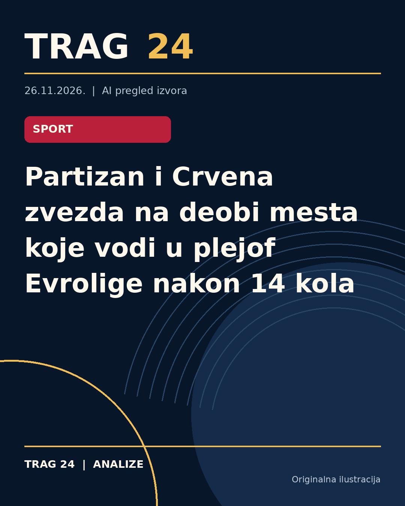

Partizan i Crvena zvezda na deobi mesta koje vodi u plejof Evrolige nakon 14 kola

ŠTA SE DOGODILO
Partizan je ostvario važnu pobedu nad Dubai timom rezultatom 84:71 u 14. kolu Evrolige, što im je donelo osmu pobedu u sezoni i značajno doprlo do plasmana u borbi za deset najboljih ekipa. Crvena zvezda, sa istim učinkom, takođe je u grupi timova koji se bore za dobre pozicije pred završnicu ligaškog dela takmičenja. Posle ovog kola poznati su i rezultati ostalih utakmica, uključujući pobede Olimpijakosa, Baskonije i Real Madrida.
HRONOLOGIJA
Partizan je u utakmici sa Dubai timom pokazao snažniju igru u poslednjoj četvrtini kada je ostvario dominantan rezultat (26:9) i tako preokrenuo tok meča. Real Madrid je savladao Žalgiris sa 108:93, a Olimpijakos je na svom terenu bio bolji od Hapoela rezultatom 104:79. Partizan je posle ovog kola sa učinkom 8-6 zauzeo deveto mesto, dok je Crvena zvezda takođe sa osam pobeda i šest poraza na sedmom mestu, delom iste grupe sobalnih timova u vrhu tabele.
ŠTA NAVODE IZVORI
Prema Novostima, Partizan se približio vrhu tabele i bori se za što bolju poziciju pred završnicu. Crvena zvezda je takođe blizu vrha sa identičnim učinkom utakmica. Prema Mondou Sport, oba srpska kluba dele šesto mesto sa velikim brojem timova koji imaju isti broj pobeda, uključujući Barselonu, Žalgiris, Pariz i Real Madrid. Postoje manje razlike u prikazu pozicija, koje su usled različitih tumačenja mesta u tabeli s istim brojem pobeda i poraza.
ŠTA JE POTVRĐENO
Potvrđeni su rezultati utakmica i položaji na tabeli Evrolige nakon 14. kola. Partizan je trijumfovao protiv Dubaija i time stigao do osam pobeda, dok Crvena zvezda ima isti učinak. Olimpijakos je lider sa 11 pobeda, dok su Valensija i Panatinaikos na drugom mestu sa po 10 pobeda. Takođe, potvrđeno je da je Partizan uključio srpske i strane igrače, a da su utakmice na vrhu tabele odigrane i završene rezultatom kako je prikazano.
ŠTA NIJE POTVRĐENO
Nije potvrđeno da li će Partizan uspeti da zadrži mesto među prvih deset do kraja sezone, niti su iznesene informacije o potencijalnim transferima ili promenama u sastavu timova nakon ovog dela sezone. Takođe, podaci o tačnoj poziciji timova sa istim skorom u tabeli razlikuju se između izvora i nisu trenutno precizirani ni usaglašeni.
ŠTA OSTАJE OTVORENO: Ostaje pitanje daljeg plasmana srpskih timova u Evroligi i njihova sposobnost da se probiju ka višim pozicijama ili da stignu do plejofa. Takođe, nije poznato kako će se odvijati preostale utakmice i da li će doći do pomeranja na tabeli koje može značajnije uticati na učesnike završnih faza takmičenja.
Izvori
- https://www.novosti.rs/sport/kosarka/1674752/ovako-izgleda-tabela-evrolige-partizan-blizu-vrha-evo-gde-zvezda
- https://mondo.rs/Sport/Kosarka/a2316954/tabela-evrolige-posle-14-kola-zvezda-i-partizan-dele-mesto.html
Ova analiza je pripremljena uz pomoć veštačke inteligencije na osnovu javno dostupnih izvora. Navodi izvora nisu nužno nezavisno potvrđeni.